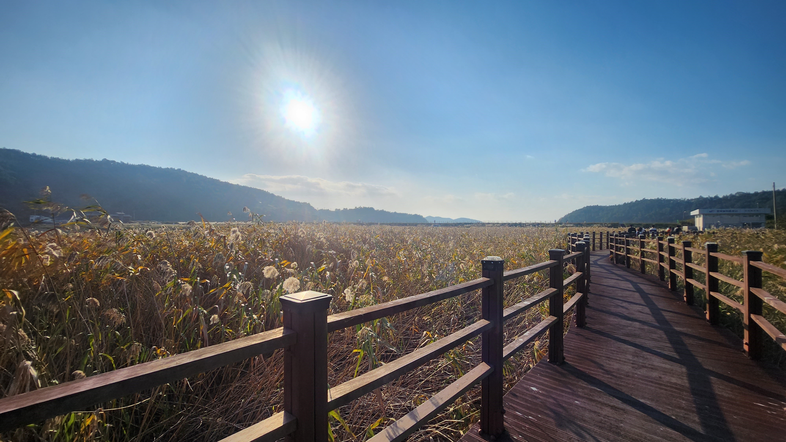

오동도
산, 바다, 꽃이 있는 오동도
기차를 타고 온다면 가장 가까운 관광지
겨울부터 피기 시작해서 3월에 절정인 동백꽃
방파제 입구에서 걸어가면 탁 트인 바다를 느끼며 가거나 섬 내부까지 가는 동백열차를 타고 편하게 가보세요.
주차하기 어렵기 때문에 렌트하기 전에/숙소에 주차 후 버스 타고/엑스포장에 주차 후 걸어서 방문하는 것을 추천합니다.
시티 투어버스를 이용하는 것도 좋습니다.
| 구분 | 요금 | 비고 |
|---|---|---|
| 일반요금 | 1,000원 | 편도요금 |
| 할인요금 | 500원 | 65세이상, 여수시민, 청소년, 대학생 국가유공자, 장애인, 6세이하, 65세이상 여수시민은 면제 |
고소동천사벽화마을
각각의 입구마다 다른 주제의 벽화가 있는 곳
허영만 선생의 만화를 주제로 한 벽화부터 동화같은 그림까지, 다양한 그림이 그려진 고소동천사벽화마을
높은곳에서 바라보는 여수시내와 바다도 멋진 곳
곳곳의 인스타용 사진스팟도 있는 곳
언덕에 있는 동내인 만큼 다리는 아플수도있지만 새로운 경험을 할수있습니다.
주차하기 어려우니 주의하세요. 물론 해양공원, 여수시내 근처입니다.
돌산 승월마을
봄에 오신다고요? 여기 분홍 분홍 합니다.
여수 시내와 많이 떨어져 있지만 벚꽃이 풍성할 때 온다면 한번 가볼 만한 곳입니다.
시골마을이라 편의점은 없지만 여유롭게 즐길 수 있는 곳입니다.
돌산의 도로는 관광차량으로 주말마다 가득 차기 때문에 버스를 타고 오는 것을 추천합니다
물론 돌산 중간쯤(굴전)을 지나면 도로가 여유로울 수도 있습니다.
돌산대교 부분은 스타벅스 더여수돌산 DT점의 개장으로 혼란스럽습니다.
버스정보
여수 시내에서 109번 또는 116번을 타고 하덕곡에서 하차
나올 때는 하덕곡 또는 승월마을앞 정류장에서 승차
주차정보: 개화시기에는 아침 일찍 와서 근처에 주차해야 합니다.(돌산읍 서덕리 1058-3)
나올 때 커피가 생각난다면 스타벅스 더여수돌산 DT점(백초초등학교 하차)를 들러도 좋습니다.
화양면 가사리 갈대밭
가을에 차를 가지고 오시거나 렌트하시나요? 여기는 가을 가을 합니다.
여수 바로 위에 있는 순천만 갈대밭보단 규모가 작지만 확실한 갈대밭입니다.
이곳은 사람도 별로 없고 주위에는 산에 둘러싸인 넓은 논과 바다를 볼 수 있습니다.
갈대밭 옆에는 꽃으로 둘러싸인 산책로가 있어 함께 둘러보면 좋습니다.
해질녘에 가면 나쁘지 않은 노을과 함께 갈대를 볼 수 있습니다.
다만 갈대밭, 약간의 꽃, 드넓은 논을 빼면 볼 것이 별로 없기에 백야도, 나진, 낭도, 적금도를 둘러보고 오는 길에 보는 것을 추천드립니다.
버스는 정말 드물게 있기 때문에 추천드리지 않습니다. 하지만 주차할 곳은 매우 많습니다.
여수 유월드 루지 테마파크

위에 소개한 곳이 재미없어서 심장이 띠질 않는다고요? 루지 어때요?
원래 유심천 온천밖에 없던 곳에 테마파크를 만들었습니다.
루지, 놀이공원, 실내 키즈파크, 테디베어 뮤지엄, 비비탄 사격장을 섞어놓았습니다.
7m 높이에서 빠르게 1.3Km의 길이로 스릴 있게 루지를 탈 수 있습니다.
테디베어 뮤지엄에서 곰댕이들을 봐보세요. 다양한 곰댕이를 볼 수 있습니다.
너무 열심히 놀아서 배가 고프다면 맘스터치, 용우동, 이화수 등이 영업 중이니 자녀와 각자 다른 메뉴를 먹는 것도 가능합니다.
이곳은 자가용으로 와도 좋고 택시를 타고 오기도 좋으며 시내버스 82번을 타면 입구까지 모셔다드립니다.